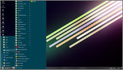

Hey everybody,
I'm new here, but try to bear a little

This might be a longer post, but I promise, I'm not trying to spam. I'm just seriously worried.
Does everybody agree that Win 10 start menu, while better than in Win 8, still sucks, though?
I can live with the tiles.. at least there's a way to configure them, arrange them the way you want, and remove the ones that you don't. I can live with this and actually sort of like it. But the way the developers imagine things should work is just a little incomprehensible. Why on Earth would someone need menus like most used/recently added? It's like they think people don't know what they're doing to their computers when installing a new app/program. I think most of us do, and when we install it.. we know how and where we want to access it. Feeding menus like these to us is just annoying. But ok. Let's assume they're necessary. I can, after all, remove them. Yeah! But if I do, I can not use that free space for anything else (shortcuts?). I can not drag and drop anything to that area since the cursor changes to a complete denial over such an action.
I still do think that people should at least be allowed to configure/adjust their OS the way they want it to be. Microsoft, don't tell people how things should be done just because you think it's 'easy'. I might be old school with this, but seriously, the good old classic menu just.. worked. Now I should be happy with 'new' layouts, because somebody thought it was better. Well if you did, please give us the tools and options to configure things.. give the people who think/use differently the chance to do it.
My current OS is Win 7 Pro and this is how I use the start menu, with the help of trusty Classic Shell.
We go from bottom to top. The shut down/log off icons, although they look old, they are where they should be - just above the start button. Then run, help, search, settings and programs (which is really the part 'all apps' now). Above that, I can add or 'pin' whatever I like, or leave it completely empty instead. But for me, I've always used it for categorizing the programs and stuff that I use most. I can do this on my own Windows, you need not interfere or hold my hand. And as you can see, I've sorted the stuff I use/want under those folders which expand and reveal the shortcuts that I need under that category.
dagello posted a link here a while ago with a screenshot that looks a bit better than the original Win 10 start menu. I'll just relink it here:

At least his left column seems nicer, because he can (somehow) add stuff there. But the white background is so Windows 7ish. Some way, he's kept the tile part unchanged and I think that is really one of the only good things about the Win 10 start menu.
My younger brother got the official update today and his start menu looks like this:

When I look at this, I think: instead of the stupid 'most used' apps list, why can't I use that space for adding shortcuts/folders that I really need? How can I re-locate the 'all apps' menu just under that 'most used' list? Did nobody think that instead of having a stupid scroll menu for 'all apps', the list could just expand on the new tiles area that they added? (this would've been perfect!).
I know this is just a rant. But at least, dear Windows.. give us a way to configure things. Drag&drop everywhere inside the start menu.. to and from, re-order.. option to disable all of the stuff that we don't need.
At least there's a way to still use the quick launch bar, which I love. That is REALLY where my 2-3 MOST used apps are. From Win 7, they want to clutter our taskbars by making us 'pin' things there. No, seriously.. taskbar is and always will be for the programs that are currently used. I seriously don't need a mess there.
I know all of you will be like "Use Classic Shell and adjust it so that you still use the classic menu'. Yes, for now that seems the ONLY real option. But design-wise, I sort of like the Win 10 start menu's transparency and some of the icons. Even the tiles are nice, kind of. What I hate is just the layout and inability to fully configure stuff the way you want it to be.
Can Classic Shell, now or in future versions, allow such options to reconfigure the start menu?